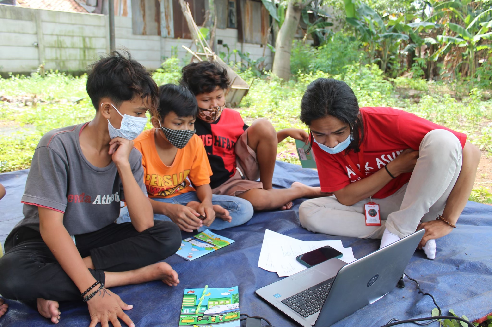

Pengembangan Karakter Anak di Kawasan Medan Satria, Kota Bekasi
Oleh Kakak Asuh Bekasi
Berawal dari mimpi, berawal dari keresahan, berawal dari kekurangan dan kelebihan yang ingin diberi. Berawal dari 4 mahasiswa, 3 sahabat, satu tujuan; Pendidikan Indonesia yang merata. Mengawali dari dua kota tujuan, puluhan mahasiswa sebagai relawan, ratusan adik-adik dengan ribuan mimpinya. Sekilas tentang Kakak Asuh, Kakak Asuh berawal dari sebuah komunitas sosial yang bergerak di bidang pendidikan dan pemberdayaan mahasiswa. Kakak Asuh didirikan pada tanggal 18 April 2018 dan saat ini terdapat di 7 daerah di Indonesia yaitu Bogor, Bandung, Bekasi, Jakarta, Depok, Semarang, dan Yogyakarta. Kini, Komunitas Kakak Asuh telah resmi memiliki badan hukum dan menjadi sebuah Yayasan dengan nama Yayasan Karya Kakak Asuh sejak 10 Februari 2020. Selain melakukan pengajaran mingguan, pada periode ini, Yayasan Karya Kakak Asuh menjalankan program “Beasiswa Kasih” untuk adik-adik asuh di seluruh daerah pengajaran. Dana beasiswa kami kumpulkan melalui platform donasi patungan.kakakasuh.org
Kalau ditanya Kakak Asuh itu apa, bagi saya pribadi, ini lebih dari sekadar
organisasi, komunitas, atau
yayasan.
Ini Keluarga. Orang mungkin datang dan pergi, tapi kami disini. setia menemani adik-adik. Setia
berdiskusi.
Besok bagaimana?
apa yang ingin kami berikan?
Berapa banyak yang bisa kami berikan?
Bagaimana
kualitas materi yang kami berikan?
Kakak Asuh,
Memberi Membimbing.
 ||
||